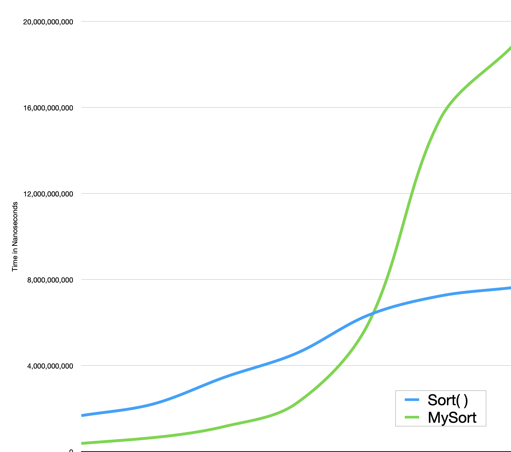

Snormax
SnormaxAbout Me
Some people dream of working outdoors: sunlight, fresh air, exciting work — I’ve done that. It’s sweaty/chilling/wet, uncomfortable, fatiguing, and often incurs sunburn, insect bites, cartilage loss, etc.. And still, all paths eventually drift away from fieldwork: advancement progresses to leadership and that work is often done from above the fray.
So this past year I decided to pivot. I have been taking two college classes per quarter while working full-time (until recently). Occasionally taking an additional CodePath course or working on an extracurricular project. I am driven by goals: my patent, for another example, has been a motivating force for me since college. Lacking the funds for the patent has been instrumental in my moving to the Bay Area and building new connections.
I have accumulated many skills, but what has remained constant is my interest in solving problems. Whether it’s finding the most efficient way to build a deck, troubleshooting a small motor/electronic device, or debugging code — it’s problem solving that I like best.
The navigation bar above and articles that follow are a selection of my various projects. Cheers!

Latest News
Current projects and more!
Creating a dating web app that aims to improve the online dating experience:
- React frontend hosted via AWS Amplify.
- User authorization via AWS Cognito.
- Drafted schema will be on AWS RDS.
- And some secret sauce that makes it a unique product!
My work with Invidica has grown from the scraper project:
- Creating a unified database across all departments.
- Employee database use/access via Sheets using Google Docs Scripts.
- Imroving business intelligence via AWS QuickSight.
- Gain ML insights from database via SageMager.
Cryptocurrency Arbitrage
Utilizes: Python, CircleCI, Docker, PyTest, AWS: EC2, DynamoDB, Cloud9
Working as a team of two to develop an algorithm that leverages minor price variations between exchanges via
high-frequency trading.
Unfortunately, tax implications sidelined this project.
Details:
- Using 'pipenv' instead of my usual 'venv'.
- Using industry standard branching, commit messages, and pull request/approval/merge.
- Standardized client wrapper logic and structure; automated testing and deployment with CircleCI.
- NEW: Created a Telegram bot to alert the team of any anomalies.
- Goals:
-
- Record frequent ask/bid data as average of purchase limit.
- Paper trading of one coin between two exchanges.
- Dial in coefficients.
- Live trading and gathering metrics.
- Expand to more coins/exchanges.
- Temporary picture of one of the exchanges for style continuity:

Selenium Web Scraper
Utilizes: Python, Selenium, Docker, GeckoDriver, AWS: Lambda, DynamoDB, CloudWatch
Independently built a web scraper for a tech start-up!
Details:
- Worked with Invidica (500 Startups) to identify automatable data aggregation tasks.
- Deployed program to an AWS Lambda triggered by a cron job from a CloudWatch event.
- Stored data in AWS RDS with fine-tuned queries; later migrated to DynamoDB.

Reddit Bot: Rock, Paper, Scissors
Utilizes: Python Reddit API Wrapper (PRAW), Python, Heroku
Resolve disputes with civility!
Process:
- Deployed a bot to Heroku that facilitates a Rock, Paper, Scissors(RPS) match through the Reddit user interface.
- Bot replies to user mentions with an invitation for parties to direct message the bot with their RPS choice.
- Bot then replies with the result — or if responses are invalid and 5 minutes elapse: an invalid message.
- Code is public on my GitHub, though a bit old.

CodePath Android Mobile App Design: Flashcard
Utilized: Android, Java, SQLite, Room
Implemented a flashcard app as the culmination of a CodePath Android Mobile App Design course.
Features:
- Option to add or delete cards.
- Option to show multiple choice answers.
- Various animation effects, a multithreaded timer, etc.
- The persistence library Room.
- SQLite database.

Beat Arrays.sort()
Utilizes: Java
Quicksort times can be beaten -- and mine is another new method!
Some known examples:
- Short arrays using Insertion Sort.
- Completely sorted arrays using Insertion Sort.
- Integer arrays using Radix Sort.
- And now my way!
I fully intend to write a paper on this subject, so details will be sparse.
I chose Arrays.sort() as a competitor by virtue of its prevalent nature and compile efficiency. The advantage of the native sort method's compile efficiency proved to be very important: the same algorithm run in Python was slow due to poor compile efficiency — I even began to doubt my validity until I ran the tests again using a Quicksort written in Python and beat it brutally.
My methodology in comparing the two is simple: both Arrays.sort() and my sort were timed sorting deep clones of the same source: a 10,000,000 item pseudo-random Integer array. The median of 1000 runs (with different source arrays each time) was recorded. After each 1000 run batch, additional variables controlling my sort's ideal conditions were decreased incrementally (increasing the k in O(n*k)). These median sort times are graphed below and illustrate the multi-fold efficiency my method has over Quicksort, it's just not an all-purpose method.
What is my algorithm? What are these “ideal conditions”? Let's schedule some time to discuss it!
API Test
Utilizes: Python, Flask, Heroku
Improve REST API and JSON familiarity.
Features:
- Developed and consumed a REST API for the hypothetical problem of maximizing attendees to a two-day event.
- Provided an authenticated POST endpoint to verify the solution and respond with a JSON payload and status.

Website Redo
Utilizes: HTML, CSS, JavaScript
This site used the Jekyll theme: Slate -- no longer! This is all me :)
Improvements:
- Enables further improvements.
- Added a navigation bar and a logo!
- Set header as fixed.
- Added more images and a carousel.
- Example of the Slate theme with which this website began: